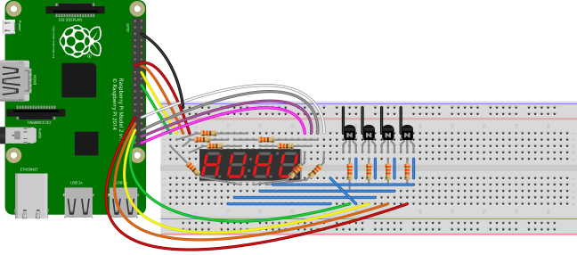
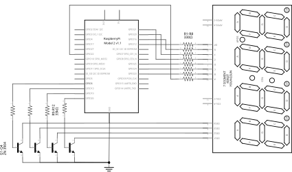

3. Advanced Recipes
The following recipes demonstrate some of the capabilities of the GPIO Zero library. Please note that all recipes are written assuming Python 3. Recipes may work under Python 2, but no guarantees!
3.1. LEDBoard
You can iterate over the LEDs in a LEDBoard object one-by-one:
from gpiozero import LEDBoard
from time import sleep
leds = LEDBoard(5, 6, 13, 19, 26)
for led in leds:
led.on()
sleep(1)
led.off()
LEDBoard also supports indexing. This means you can access the
individual LED objects using leds[i] where i is an integer
from 0 up to (not including) the number of LEDs:
from gpiozero import LEDBoard
from time import sleep
leds = LEDBoard(2, 3, 4, 5, 6, 7, 8, 9)
leds[0].on() # first led on
sleep(1)
leds[7].on() # last led on
sleep(1)
leds[-1].off() # last led off
sleep(1)
This also means you can use slicing to access a subset of the LEDs:
from gpiozero import LEDBoard
from time import sleep
leds = LEDBoard(2, 3, 4, 5, 6, 7, 8, 9)
for led in leds[3:]: # leds 3 and onward
led.on()
sleep(1)
leds.off()
for led in leds[:2]: # leds 0 and 1
led.on()
sleep(1)
leds.off()
for led in leds[::2]: # even leds (0, 2, 4...)
led.on()
sleep(1)
leds.off()
for led in leds[1::2]: # odd leds (1, 3, 5...)
led.on()
sleep(1)
leds.off()
LEDBoard objects can have their LED objects named upon construction.
This means the individual LEDs can be accessed by their name:
from gpiozero import LEDBoard
from time import sleep
leds = LEDBoard(red=2, green=3, blue=4)
leds.red.on()
sleep(1)
leds.green.on()
sleep(1)
leds.blue.on()
sleep(1)
LEDBoard objects can also be nested within other LEDBoard
objects:
from gpiozero import LEDBoard
from time import sleep
leds = LEDBoard(red=LEDBoard(top=2, bottom=3), green=LEDBoard(top=4, bottom=5))
leds.red.on() ## both reds on
sleep(1)
leds.green.on() # both greens on
sleep(1)
leds.off() # all off
sleep(1)
leds.red.top.on() # top red on
sleep(1)
leds.green.bottom.on() # bottom green on
sleep(1)
3.2. Multi-character 7-segment display
The 7-segment display demonstrated in the previous chapter is often available in multi-character variants (typically 4 characters long). Such displays are multiplexed meaning that the LED pins are typically the same as for the single character display but are shared across all characters. Each character in turn then has its own common line which can be tied to ground (in the case of a common cathode display) to enable that particular character. By activating each character in turn very quickly, the eye can be fooled into thinking four different characters are being displayed simultaneously.
In such circuits you should not attempt to sink all the current from a single character (which may have up to 8 LEDs, in the case of a decimal-point, active) into a single GPIO. Rather, use some appropriate transistor (or similar component, e.g. an opto-coupler) to tie the digit’s cathode to ground, and control that component from a GPIO.

This circuit demonstrates a 4-character 7-segment (actually 8-segment, with decimal-point) display, controlled by the Pi’s GPIOs with 4 2N-3904 NPN transistors to control the digits.
Warning
You are strongly advised to check the data-sheet for your particular multi-character 7-segment display. The pin-outs of these displays vary significantly and are very likely to be different to that shown on the breadboard above. For this reason, the schematic for this circuit is provided below; adapt it to your particular display.

The following code can be used to scroll a message across the display:
from itertools import cycle
from collections import deque
from gpiozero import LEDMultiCharDisplay
from signal import pause
display = LEDMultiCharDisplay(
LEDCharDisplay(22, 23, 24, 25, 21, 20, 16, dp=12), 26, 19, 13, 6)
def scroller(message, chars=4):
d = deque(maxlen=chars)
for c in cycle(message):
d.append(c)
if len(d) == chars:
yield ''.join(d)
display.source_delay = 0.2
display.source = scroller('GPIO 2ER0 ')
pause()
3.3. Who’s home indicator
Using a number of green-red LED pairs, you can show the status of who’s home, according to which IP addresses you can ping successfully. Note that this assumes each person’s mobile phone has a reserved IP address on the home router.
from gpiozero import PingServer, LEDBoard
from gpiozero.tools import negated
from signal import pause
status = LEDBoard(
mum=LEDBoard(red=14, green=15),
dad=LEDBoard(red=17, green=18),
alice=LEDBoard(red=21, green=22)
)
statuses = {
PingServer('192.168.1.5'): status.mum,
PingServer('192.168.1.6'): status.dad,
PingServer('192.168.1.7'): status.alice,
}
for server, leds in statuses.items():
leds.green.source = server
leds.green.source_delay = 60
leds.red.source = negated(leds.green)
pause()
Alternatively, using the STATUS Zero board:
from gpiozero import PingServer, StatusZero
from gpiozero.tools import negated
from signal import pause
status = StatusZero('mum', 'dad', 'alice')
statuses = {
PingServer('192.168.1.5'): status.mum,
PingServer('192.168.1.6'): status.dad,
PingServer('192.168.1.7'): status.alice,
}
for server, leds in statuses.items():
leds.green.source = server
leds.green.source_delay = 60
leds.red.source = negated(leds.green)
pause()
3.4. Travis build LED indicator
Use LEDs to indicate the status of a Travis build. A green light means the tests are passing, a red light means the build is broken:
from travispy import TravisPy
from gpiozero import LED
from gpiozero.tools import negated
from time import sleep
from signal import pause
def build_passed(repo):
t = TravisPy()
r = t.repo(repo)
while True:
yield r.last_build_state == 'passed'
red = LED(12)
green = LED(16)
green.source = build_passed('gpiozero/gpiozero')
green.source_delay = 60 * 5 # check every 5 minutes
red.source = negated(green)
pause()
Note this recipe requires travispy. Install with sudo pip3 install
travispy.
3.6. Robot controlled by 2 potentiometers
Use two potentiometers to control the left and right motor speed of a robot:
from gpiozero import Robot, Motor, MCP3008
from gpiozero.tools import zip_values
from signal import pause
robot = Robot(left=Motor(4, 14), right=Motor(17, 18))
left_pot = MCP3008(0)
right_pot = MCP3008(1)
robot.source = zip_values(left_pot, right_pot)
pause()
To include reverse direction, scale the potentiometer values from 0->1 to -1->1:
from gpiozero import Robot, Motor, MCP3008
from gpiozero.tools import scaled
from signal import pause
robot = Robot(left=Motor(4, 14), right=Motor(17, 18))
left_pot = MCP3008(0)
right_pot = MCP3008(1)
robot.source = zip(scaled(left_pot, -1, 1), scaled(right_pot, -1, 1))
pause()
Note
Please note the example above requires Python 3. In Python 2, zip()
doesn’t support lazy evaluation so the script will simply hang.
3.7. BlueDot LED
BlueDot is a Python library an Android app which allows you to easily add Bluetooth control to your Raspberry Pi project. A simple example to control a LED using the BlueDot app:
from bluedot import BlueDot
from gpiozero import LED
bd = BlueDot()
led = LED(17)
while True:
bd.wait_for_press()
led.on()
bd.wait_for_release()
led.off()
Note this recipe requires bluedot and the associated Android app. See the
BlueDot documentation for installation instructions.
3.8. BlueDot robot
You can create a Bluetooth controlled robot which moves forward when the dot is pressed and stops when it is released:
from bluedot import BlueDot
from gpiozero import Robot, Motor
from signal import pause
bd = BlueDot()
robot = Robot(left=Motor(4, 14), right=Motor(17, 18))
def move(pos):
if pos.top:
robot.forward(pos.distance)
elif pos.bottom:
robot.backward(pos.distance)
elif pos.left:
robot.left(pos.distance)
elif pos.right:
robot.right(pos.distance)
bd.when_pressed = move
bd.when_moved = move
bd.when_released = robot.stop
pause()
Or a more advanced example including controlling the robot’s speed and precise direction:
from gpiozero import Robot, Motor
from bluedot import BlueDot
from signal import pause
def pos_to_values(x, y):
left = y if x > 0 else y + x
right = y if x < 0 else y - x
return (clamped(left), clamped(right))
def clamped(v):
return max(-1, min(1, v))
def drive():
while True:
if bd.is_pressed:
x, y = bd.position.x, bd.position.y
yield pos_to_values(x, y)
else:
yield (0, 0)
robot = Robot(left=Motor(4, 14), right=Motor(17, 18))
bd = BlueDot()
robot.source = drive()
pause()
3.9. Controlling the Pi’s own LEDs
On certain models of Pi (specifically the model A+, B+, and 2B) it’s possible to control the power and activity LEDs. This can be useful for testing GPIO functionality without the need to wire up your own LEDs (also useful because the power and activity LEDs are “known good”).
Firstly you need to disable the usual triggers for the built-in LEDs. This can be done from the terminal with the following commands:
$ echo none | sudo tee /sys/class/leds/led0/trigger
$ echo gpio | sudo tee /sys/class/leds/led1/trigger
Now you can control the LEDs with gpiozero like so:
from gpiozero import LED
from signal import pause
power = LED(35) # /sys/class/leds/led1
activity = LED(47) # /sys/class/leds/led0
activity.blink()
power.blink()
pause()
To revert the LEDs to their usual purpose you can either reboot your Pi or run the following commands:
$ echo mmc0 | sudo tee /sys/class/leds/led0/trigger
$ echo input | sudo tee /sys/class/leds/led1/trigger
Note
On the Pi Zero you can control the activity LED with this recipe, but
there’s no separate power LED to control (it’s also worth noting the
activity LED is active low, so set active_high=False when constructing
your LED component).
On the original Pi 1 (model A or B), the activity LED can be controlled with GPIO16 (after disabling its trigger as above) but the power LED is hard-wired on.
On the Pi 3 the LEDs are controlled by a GPIO expander which is not accessible from gpiozero (yet).